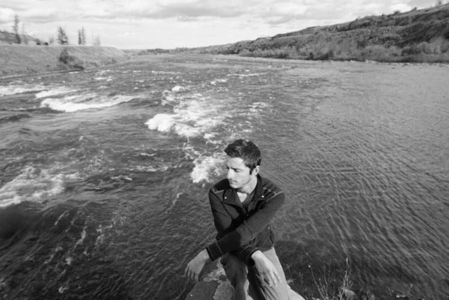

Hello, my name is Josh Kornish-Sierra.
I am a soft-goods designer based out of Missoula, Montana.
I design gear for outdoor pursuits that inspire me.
From a young age I've loved the mountains and the gear that allows us to move freely in the hills.
My passion for the vertical world was fostered by many mentors who showed me the ropes and the beauty of the craft.
I love all mediums of climbing from bouldering to alpine.

My vision as a designer is to handcraft Technical, Unique, Functional, Art